Native Rust
Pure Rust — no C/C++ dependencies. Memory safety, fearless concurrency, and zero-cost abstractions guaranteed at compile time.
No ROS Installation Needed
No apt install ros-*, no colcon workspace, no setup.bash. Add hiroz as a Cargo dependency and start building — ROS 2 messages and interfaces are bundled.
ROS 2 Compatible
Full wire compatibility with standard ROS 2 nodes via rmw_zenoh_cpp. Pub/sub, services, and actions all interoperate out of the box.
Lifecycle Nodes
Full ROS 2 managed node lifecycle — configure, activate, deactivate, and clean up nodes with the standard state machine and lifecycle events.
Parameter Subsystem
Full ROS 2 parameter server with typed parameters, dynamic reconfiguration, parameter events, and a Python/Rust client API.
Clock & Simulation Time
System and simulated clock primitives (ZClock), clock-aware sleep and periodic intervals (ZInterval). Switch modes programmatically for deterministic testing.
Cross-Distro Bridge
Bridging between ROS 2 Humble and Jazzy over Zenoh — let different distros communicate transparently on the same network.
Multi-Language Bindings
Python bindings (PyO3 + full actions/SHM/graph), Go bindings, PEP 561 type stubs, and an RMW implementation for standard ROS 2 C++/Python nodes.
Zenoh Transport
High-performance pub/sub engine with router-based discovery, shared memory (SHM) for zero-copy intra-host transfers, and flexible key expression routing.
Flexible Serialization
CDR by default for full ROS 2 wire compatibility. Opt into Protobuf for schema evolution and cross-language data exchange — per topic, per publisher.
Architecture
Hiroz provides three integration paths to suit different use cases.

Choose Your Path
Not sure where to start? Pick the path that matches your goal.
Run a publisher and subscriber in 5 minutes with the Quick Start.
Connect hiroz nodes to existing ROS 2 C++/Python nodes via rmw_zenoh_cpp.
Get the Python bindings running with a publisher and subscriber example.
Build a Go publisher and subscriber using the CGo FFI bindings.
Dive into Core Concepts — pub/sub, services, actions, parameters, and lifecycle.
Use the cross-distro bridge to transparently connect different ROS 2 distributions.
Ready to build faster, safer, interoperable robotics?
Get Hiroz running in under 5 minutes with the Quick Start guide.
Quick Start GitHub